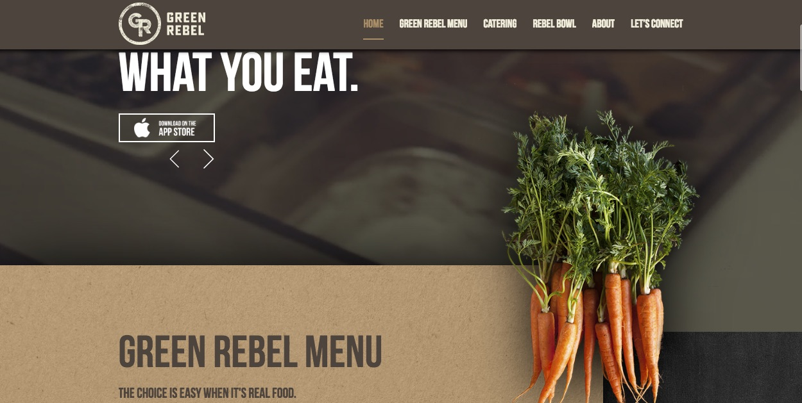

/Home/
Green Rebel- A Website Critique
October 6th, 2016
Green Rebel is an enterprise that promotes healthy food habits by serving people wholesome, fresh ingredients in the menu they offer. The website has a beautiful interface with wonderful imagery. The landing page has a video of people preparing food in the kitchen counter using fresh ingredients and is successful in capturing the user’s attention. This also drives home, the focus of the enterprise, which is about serving wholesome fresh ingredients.
The hierarchy of the website is pretty well established with a navigation bar at the top containing links/ tabs to the main sections of the website. It has a defined footer at the bottom with details like the contact information, privacy and terms. Also, right below the navigation bar is a banner that has big block text quotes, which capture the essence of the enterprise. The general navigation through the website is spot-on and straightforward. It just follows a top-down linear approach and the user has to keep scrolling down one way to get all the information. I think this is pretty cool and less complex/ less confusing for people.
The color scheme is rustic in nature with rich browns and greens, and with the photograph of a textured kitchen counter working as the backdrop. Tiny pictures of fresh veggies here and there are a nice touch. Overall, the website is clean and has the right amount of information up. This helps keep the interest.
However, in the ‘Green Rebel Menu’, ‘Catering’ and the ‘About Menu’ pages of the website, I didn’t really like the small band of images in the background. The width of the band exposing the background photograph feels too narrow and it fails to give the viewer a complete picture of the subject of the photograph in use. It’s almost like a large part of the photograph is hidden and the viewer has to take a guess as to what is happening in the photograph.
Also, the logo for Green Rebel which is placed on the top left corner is a clickable link throughout the website. But, it is not readily visible to the user that it is a clickable link. I wish the logo had a color change when the cursor hovered over it in order to prompt the user to click it.